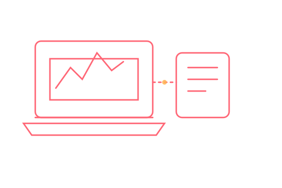

Schulung · Diagnose
VCDS, VCP & ODIS im Praxiseinsatz
Fehlerspeicher richtig lesen, Grundeinstellungen sicher anwenden und verstehen, wann welches der drei Systeme die richtige Wahl ist — praxisnah für Werkstattteams im Volkswagen-Konzern.

Diese Schulung vermittelt strukturiertes Diagnose-Know-how für den Volkswagen-Konzern — von den VCDS-Grundlagen bis zu den Besonderheiten von VCP und ODIS. Statt einzelner Tricks steht das Verständnis im Vordergrund: Warum zeigt ein Fehlerspeichereintrag das, was er zeigt, und welcher Diagnoseweg führt am schnellsten zur Ursache?
- VCDS: Fehlerspeicher auslesen und interpretieren, Grundeinstellungen, sichere Codierung
- VCP: gateway-basierte Kommunikation bei moderneren Fahrzeuggenerationen
- ODIS: Guided Fault Finding und Interpretation herstellernaher Prüfabläufe
- Praxisbeispiele aus dem Werkstattalltag statt reiner Theorie
Für wen & wie
Zielgruppe
Freie Werkstätten, Werkstattteams mit VW-Konzern-Schwerpunkt und Quereinsteiger, die strukturiert in die Diagnose einsteigen wollen.
Format & Dauer
Halbtags- oder Tagesformat, vor Ort in der Werkstatt mit realen Fahrzeugen oder als Remote-Session für theorielastige Teile.
Vorkenntnisse
Keine Voraussetzung — Inhalte werden auf das Vorwissen des Teams zugeschnitten, von Grundlagen bis Auffrischung.
Diese Schulung anfragen
Direkt über das Anfrageformular auf der Schulungsübersicht anfragen — „Diagnose (VCDS/VCP/ODIS)" als Thema auswählen.